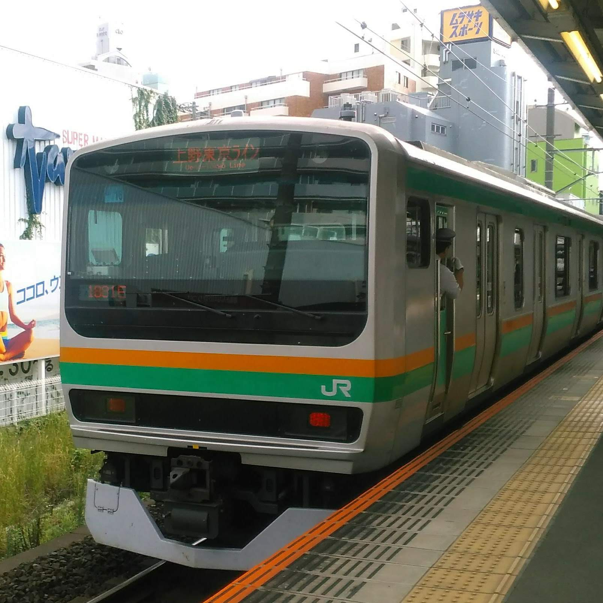
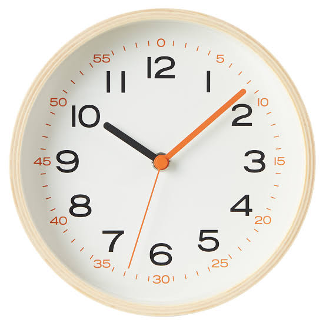
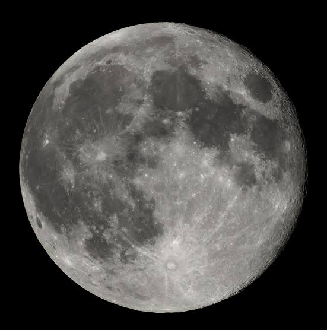

-

Bookmarks
-
おすすめサイト集
-
わかんねー
-
ファイル
-

ブログ
-
あまり使わない
-
楽譜
-
便利
-
-
Yahoo!サービス
-
Googleサービス
-
Wikipedia
-

リアルタイム
-
読み上げ
-
地図・案内
-
変換ツール
-
端末機能
-
マイクラ関係
-
文字
-
情報読み取り
-
(新)○○ジェネレーター
-
一覧表・早見表
-
気象情報
-

天体
-
[新]webシュミレーター
-
飛行機
-

チャット
-

テレビ
-

ラジオ
-
計算
- GUID生成ツール
Wikipedia
Wikipedia-jp
Wikipedia-jp利用者ページ
Wikipediaコモンズ
Wikipediaコモンズ利用者ページ
その他誹謗中傷Wikipedia
真夏の夜の淫夢Wiki
唐澤貴洋Wiki
-
-
ゲーム(電車)
- 一時的に保存BlockLauncher Addons | MCPE DL
- SDカード
- SteadyMistressサーバー
-
電車
-

ダウンロードリスト
-
apk
-
コート
minecraft pe wiki
プライベートwiki
プライベートwiki【pc】
minecraft @wiki
seesaa wiki（ウィキ）- ゲーム攻略に便利な無料wiki
minecraft-pocket edition 1.0.5.54.apk free_download_cracked_on_google_playhiapphere market
マインクラフト | uploader.jp
聖書をオンラインで読む ― 聖書の無料ダウンロード: mp3ファイル，pdf
thvocaloid21 -6- | musescore
444種アイテム・ブロックid一覧！コマンドでしか入手できないブロックも | nishiのマインクラフト攻略
音level.playsound, level.playsoundent - mcpe modders
google
データ値/id - minecraft japan wiki - アットウィキ
あぷりdownload app apk android app online - free pure apk downloader
プライベートwiki
プライベートwiki【pc】
minecraft @wiki
seesaa wiki（ウィキ）- ゲーム攻略に便利な無料wiki
minecraft-pocket edition 1.0.5.54.apk free_download_cracked_on_google_playhiapphere market
マインクラフト | uploader.jp
聖書をオンラインで読む ― 聖書の無料ダウンロード: mp3ファイル，pdf
thvocaloid21 -6- | musescore
444種アイテム・ブロックid一覧！コマンドでしか入手できないブロックも | nishiのマインクラフト攻略
音level.playsound, level.playsoundent - mcpe modders
データ値/id - minecraft japan wiki - アットウィキ
あぷりdownload app apk android app online - free pure apk downloader
エミュレータ
昆茶
"画像を読み込めませんw"